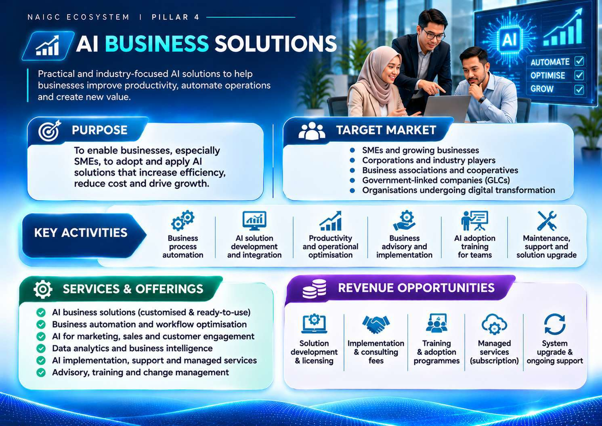

NAIGC
Malaysia AI Generation Centre
SYS//NODE.04 // ONLINE
←
HUB UTAMA
SYS//NODE.04 • STRATEGIC PILLAR 04
AI BUSINESS SOLUTIONS
Practical and industry-focused AI solutions to help businesses improve productivity, automate operations and create new value.
PURPOSE & OBJECTIVES
To enable businesses, especially SMEs, to adopt and apply pragmatic AI solutions that increase operational efficiency, reduce overheads and unlock growth.
TARGET MARKET
- SMEs and high-growth micro-enterprises across Malaysia
- Mid-tier corporations and commercial retail/manufacturing players
- Chambers of commerce, business associations and cooperatives
- Government-linked commercial companies (GLCs)
- Traditional enterprises undergoing rapid digital modernisation
KEY ACTIVITIES & OPERATIONS
Process Automation
Implementing intelligent robotic process automation (RPA) and AI workflow bots.
Custom AI Integration
Embedding generative AI and machine learning models directly into existing ERP/CRM systems.
Productivity Optimisation
Eliminating repetitive administrative back-office bottlenecks and manual data handling.
Advisory & Implementation
End-to-end technical consulting from requirements analysis to live production deployment.
Ongoing Maintenance & Upgrades
Managed cloud operations, security patching, and continuous model performance tuning.
SERVICES & OFFERINGS
- Turnkey & Customised Business Automation Workflows
- Intelligent Customer Service & Multilingual AI Voice/Chat Agents
- Predictive Business Intelligence & Executive Analytics Dashboards
- AI Document Processing & Automated Financial Extraction
- Comprehensive Solution Implementation & Legacy System Integration
- Post-Deployment Managed SLA Services & Continuous Model Training
REVENUE & VALUE OPPORTUNITIES
Solution Licensing & SaaS
Implementation & Consulting Fees
Managed Services (Subscription)
Maintenance & Upgrades (AMC)
OFFICIAL NAIGC STRATEGIC ROADMAP • PILLAR 04
NATIONAL ARCHIVE • AUTHORISED DOCUMENT

SYS//CORE ONLINE • 8 ECOSYSTEM NODES OPERATIONAL • MALAYSIA AI GENERATION CENTRE